Let's go somewhere where you will feel alone with nature and return to reason and faith. Become one with the tranquil and serene vibes oozing from the paradise of nature. Situated in the Kumaon region of Uttarakhand and home to the spectacular Lake Naini, the famous hill station of India, Nainital, is often referred as the 'Lake District' of India. It is a destination suitable for all types of tourists, but primarily, is an ideal family destination. It is well-connected by the major cities in North India, and offers a number of activities promising a good time to each member of the family.
Naini Lake, Tiffin Top, Astronomical Observatory, Snow View Point, Eco Cave Garden.
Boating in Naini Lake, Skating in Zoomland, Cable Car Ride to Snow View Point, Vantage Point to Overlook at Valley from Tiffin Top, Hike to China Peak.
Zooby’s Kitchen, Giannis Pure Veg, Sakley's Restaurant & Pastry Shop, Machan Restaurant, China Town, Sonam.
The nearest railway station to Nainital is in Kathgodam, which is around 36 km from the city. One can take a taxi from Kathgodam to reach Nainital. Alternatively, there are buses between Haldwani (40 km) and Nainital. However, they are mostly crowded. There are also buses from Delhi and other major cities of North India to Haldwani.
December to February.
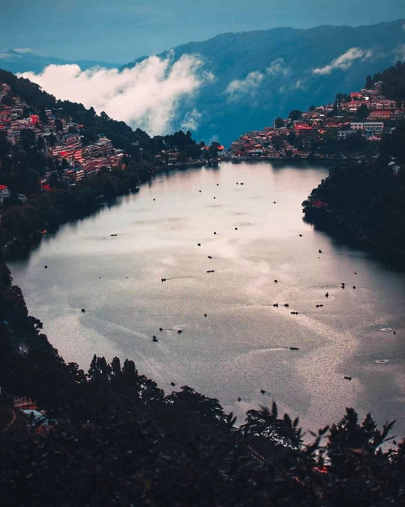 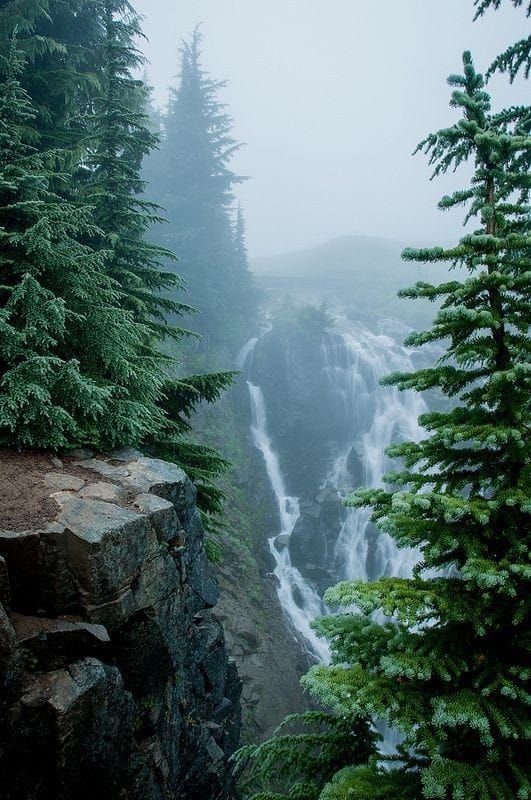 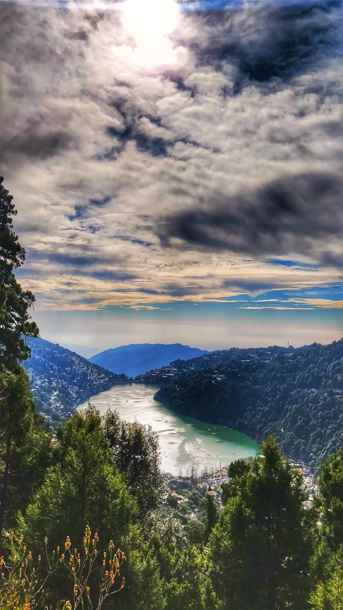There cannot be a list comprising the top hill stations of India without mentioning Darjeeling. Fondly referred to as the Queen of the Hills, what makes it a best destination for winter vacations is its rich natural beauty, the Toy Train (UNESCO World Heritage Site), various sightseeing opportunities and colonial era architecture.
Darjeeling Toy Train, Senchal Lake, Ghoom Monastery, Mahakal Temple, Observatory Hill, Tiger Hill, Bhutia Busty Monastery, Dhirdham Temple, Mountaineering Institute and Darjeeling Zoo.
River Rafting, Trekking, Toy Train Ride, Wildlife Sighting at Padmaja Naidu Himalayan Zoological Park, Cottage Camping.
Sonam’s Kitchen, Kunga Restaurant, Glenary’s, Keventers, Tom & Jerry’s, Nathmull Tea.
The nearest airport to Darjeeling is in Bagdogra, which is some 67 km away. The nearest railway station to Darjeeling is in New Jalpaiguri, which is about 72 km away. Cabs are available from these destinations to Darjeeling.
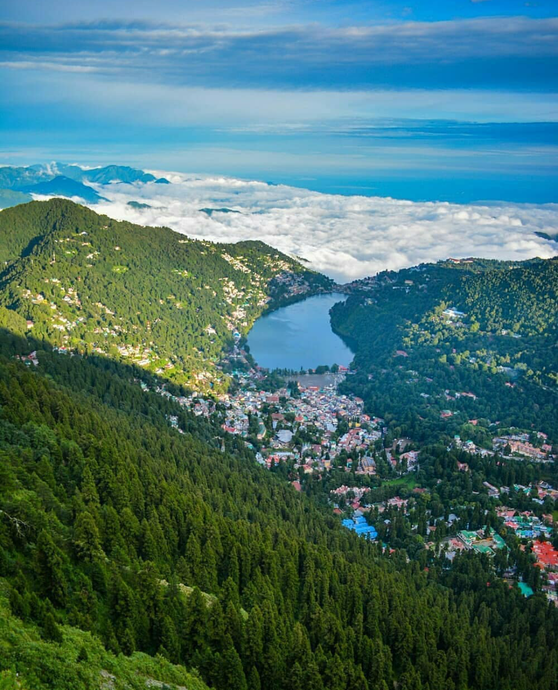 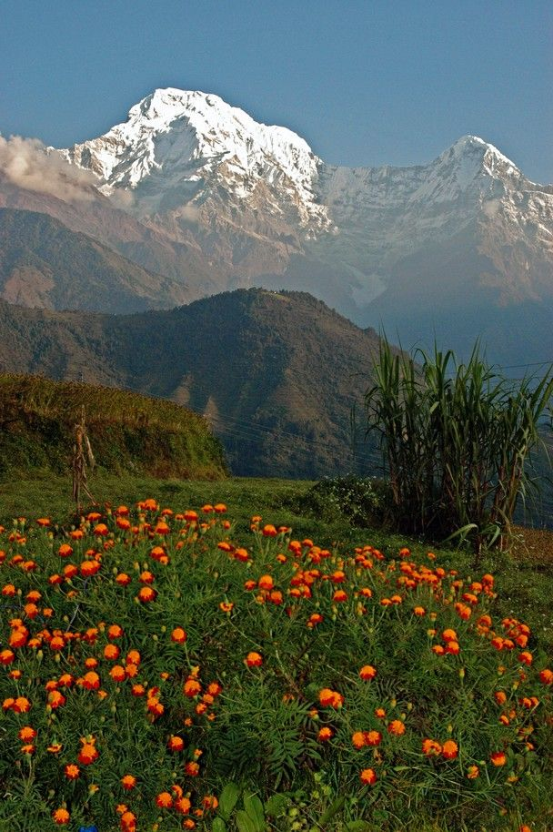 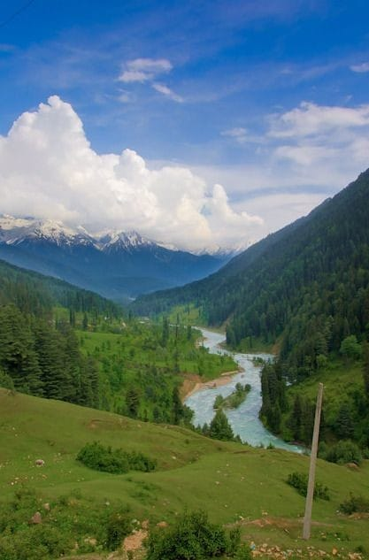Gulmarg, also known as the Meadow of Flowers, is nothing less than a fairytale land tucked away in the picturesque valley of Kashmir. Unarguably amongst the best hill stations to visit in India, it is a popular skiing destination and is also known for one of the longest cable car projects in Asia. Gulmarg is a haven for any adventure aficionado seeking an adrenaline rush through winter sports like skiing, heli-skiing and snowboarding. Apart from winter adventure sports, one can enjoy trekking and golfing as well.
Gulmarg Gondola, Golf Course, Gulmarg Biosphere Reserve, Baba Reshi Shrine, Shark Fin, Kongdori, Maharani Temple, St Mary's Church.
Skiing, Snowboarding, Take a Ride on Gulmarg Gondola, Golfing, Explore wildlife at Gulmarg Biosphere Reserve, Picnic at Ningle Nallah.
Gulmarg is well-connected by road with Srinagar, which is situated about 50 km away and has an airport that connects it with other cities of India. From Srinagar, cabs are readily available for Gulmarg.
November to February.
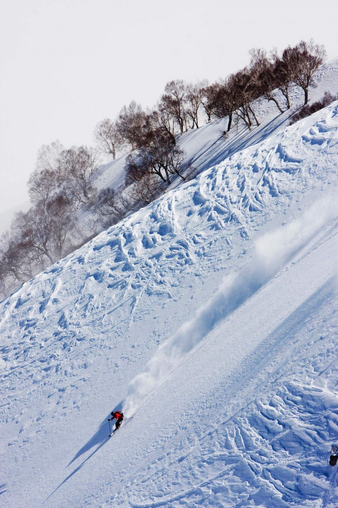 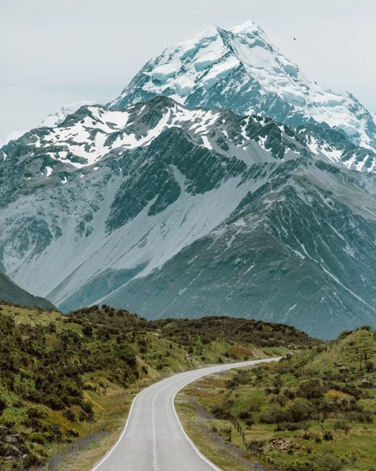 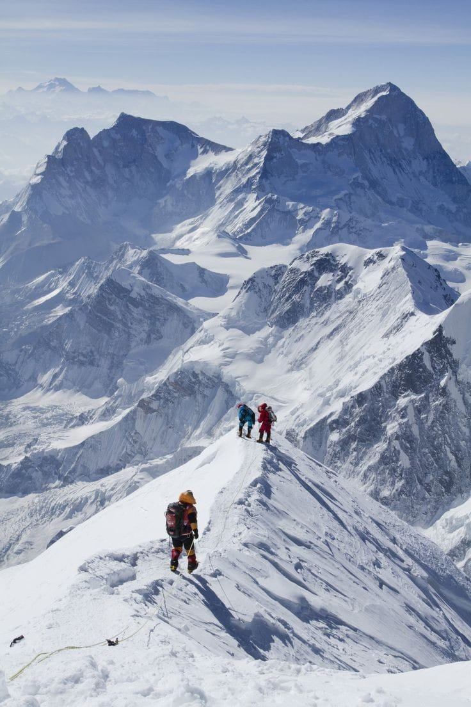Ooty or Ootacamund is famous for its picturesque sites, pristine lake and rolling hills. But the chief attractions of Ooty are the sprawling tea gardens.
Ooty Lake, Ooty Botanical Gardens, Ooty Rose Garden, Doddabetta Peak, St Stephen’s Church, Thread Garden, Tiger Hill, Kamraj Sagar Lake, Thunder World, Ketti Valley View, Nilgiri Mountain Railway, Cairn Hill, Adam’s Fountain.
Toy Train Ride, Hiking, Nature Walks, Boating in Ooty Lake, Tea Factory Tour, Chocolate Factory Tour.
The nearest airport to Ooty is in Coimbatore, which is some 84 km away. Cabs are available for Ooty from Coimbatore. One can also board the famous Nilgiri Mountain Railway’s Toy Train to reach Ooty from Coimbatore.
December to February.
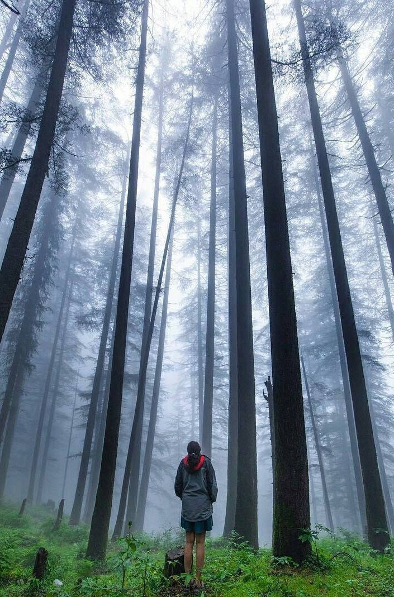 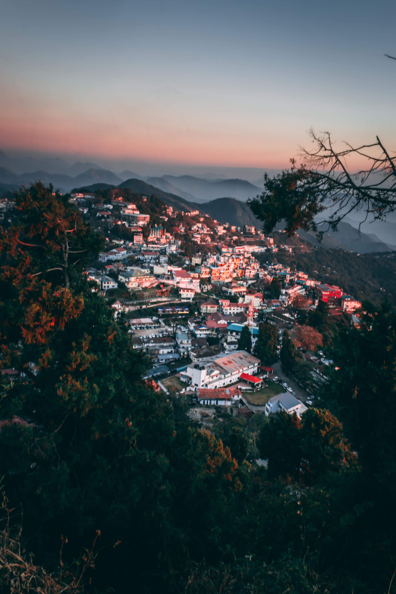 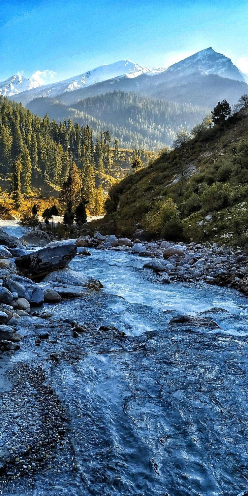With its incredible natural beauty, temples and sacred sites as well as the base for numerous adventure activities, Manali easily finds a spot among the top 10 hill stations in India. One of the popular places to visit in Himachal, it is also renowned as the best honeymoon destination. You can enjoy sightseeing, try out several adventure sports and go shopping. No wonder it is such a popular tourist destination.
Hadimba Temple, Rohtang Pass, Solang Valley, Vashist Temples & Hot Water Springs, Tibetan Monasteries, Mall Road, Club House, Manu Temple, Nehru Kund, Bhrigu Lake, Kothi, Naggar Castle, Manali Wildlife Sanctuary, Old Manali, Sethan.
River Rafting, Trekking, Shopping, Paragliding, Stay in an Igloo at Sethan, Skiing in Solang Valley (in winters), Quad Biking in Solang Valley, Bird Watching.
Manali is well-connected by road with several destinations in North India. From Delhi, Ambala, Dehradun, and Chandigarh there are buses on a regular basis for Manali. The nearest airport to Manali is in Bhuntar, fewer flights are available for here.
December to February.
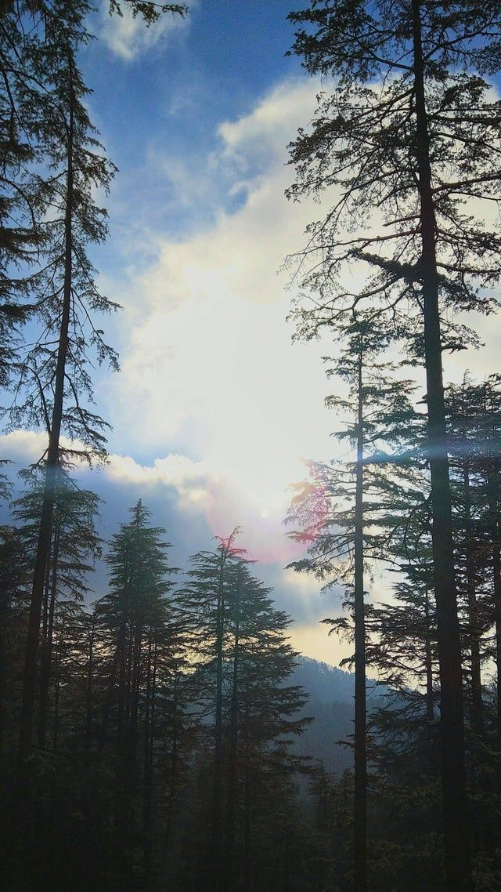 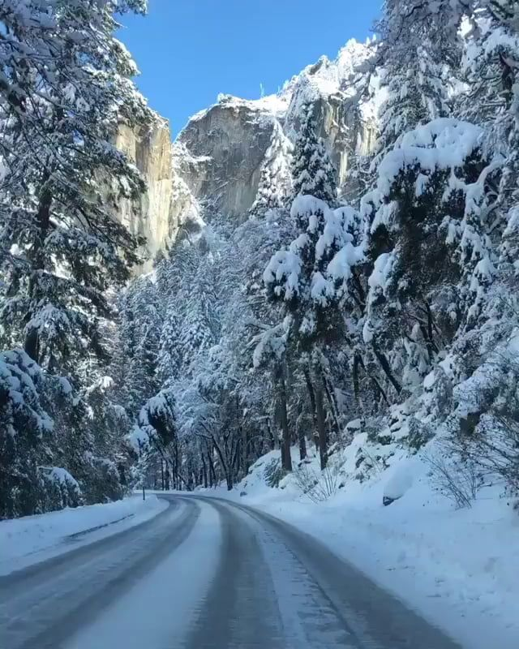 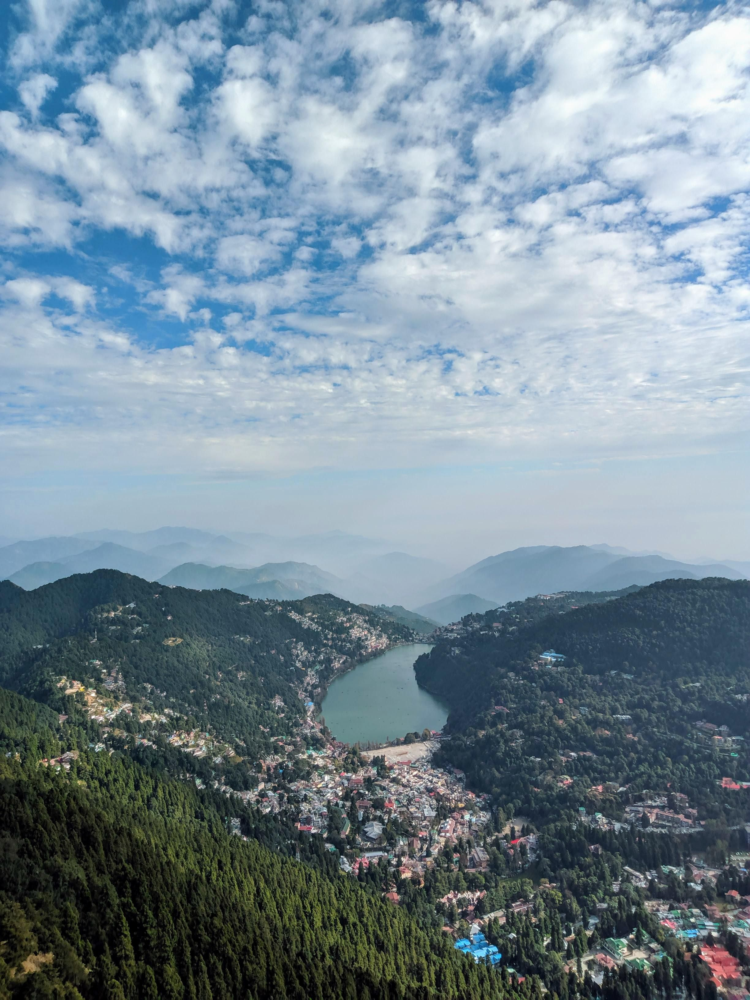